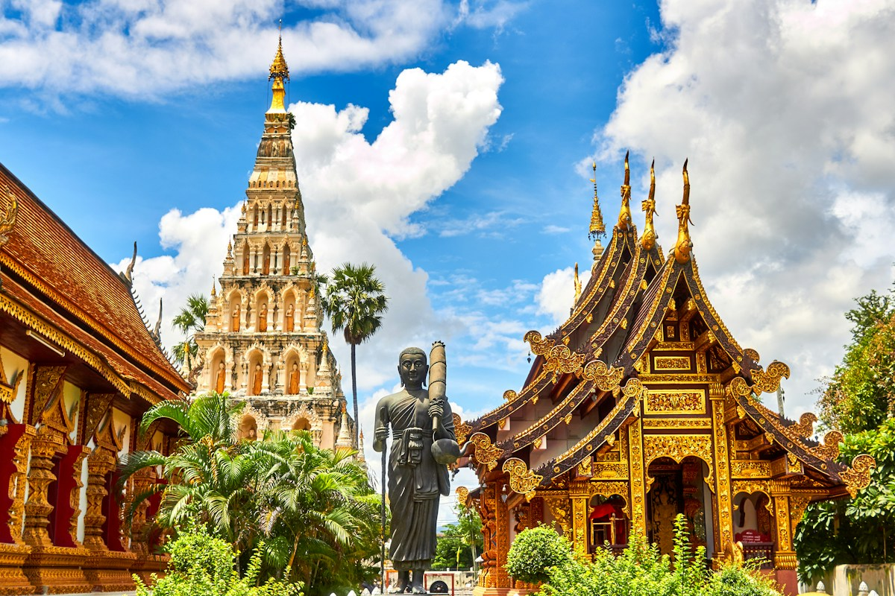
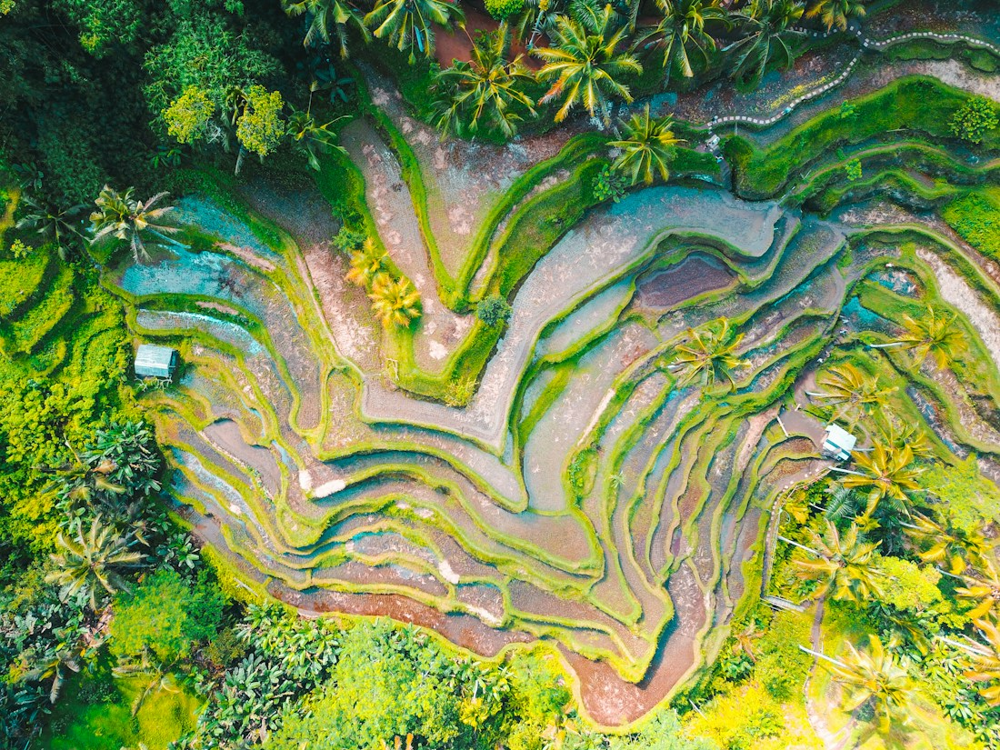

01 / 16
MIỀN BẮC · 4 NGÀY
Hà
Giang.
Đường đi đủ khó để bạn bỏ điện thoại xuống. Mùa đẹp nhất là tháng 9 đến 11, khi ruộng chuyển màu và trời khô.
- ATMOSPHERE
- đá, khói bếp, gió cao
- PACE
- chậm / nhiều đoạn dừng
Không xếp hạng, không “top 10”. Đây là những nơi ở Việt Nam có nhiều lớp để bạn ở lại lâu hơn một chuyến check-in.
MIỀN BẮC · 4 NGÀY
Đường đi đủ khó để bạn bỏ điện thoại xuống. Mùa đẹp nhất là tháng 9 đến 11, khi ruộng chuyển màu và trời khô.
MIỀN BẮC · 2 NGÀY
Ngồi thuyền qua Tràng An, đạp xe giữa cánh đồng và ngủ một đêm thật yên, cách Hà Nội chưa tới hai giờ.
MIỀN TRUNG · 3 NGÀY
Đi bộ lúc phố chưa đông. Một thành phố cũ dễ thương hơn nhiều khi trời vừa tạnh mưa.

04 / 16MIỀN TRUNG · 2 NGÀY
Buổi sáng ăn bún bò, buổi chiều đi qua Đại Nội, tối nghe một bản nhạc cũ bên sông Hương.
MIỀN NAM · 4 NGÀY
Biển trong, đồ ăn tươi, và đủ nhiều khoảng trống để không phải lên lịch cho từng buổi chiều.
MIỀN NAM · 2 NGÀY
Thức trước bình minh để đi chợ nổi, ăn sáng trên sông và ghé một vườn cây trĩu quả.
TÂY NGUYÊN · 3 NGÀY
Thành phố của những con dốc, quán cà phê mở sớm và buổi chiều xuống rất nhanh. Hợp với những ngày cần đi chậm lại.
TÂY BẮC · 2 NGÀY
Đồi chè xanh, đường quanh co và không khí mát quanh năm. Đi vào mùa hoa để thấy cao nguyên đổi màu.
NAM TRUNG BỘ · 3 NGÀY
Biển gần thành phố nhưng vẫn có những đoạn vắng. Buổi sáng ăn bánh hỏi, chiều chạy xe men theo bờ nước.
ĐỒNG BẰNG · 2 NGÀY
Một miền Tây nhiều màu: ghe thuyền, chợ biên giới, làng nghề và những bữa cơm có vị mắm rất riêng.

10 / 16ĐÔNG BẮC · 3 NGÀY
Thác Bản Giốc, sông Quây Sơn và những con đường xanh qua làng nhỏ. Nơi này hợp với người thích cảnh rộng và lịch trình thưa.
BẮC TRUNG BỘ · 3 NGÀY
Buổi sáng vào hang, buổi chiều đạp xe qua đồng lúa và tối ngồi bên sông Son. Một điểm đến cho những ngày muốn ở gần thiên nhiên.
DUYÊN HẢI · 3 NGÀY
Thành phố dễ bắt đầu: biển ở gần, đồ ăn mở cửa sớm, có thể đi từ chợ đến bán đảo Sơn Trà trong cùng một ngày.
TÂY NGUYÊN · 3 NGÀY
Nhịp sống chậm bên sông Đăk Bla, nhà rông, cà phê rang đậm và những cung đường ít người dừng lại.
ĐẢO PHÍA NAM · 3 NGÀY
Biển trong, rừng sát mép nước và một cảm giác tách khỏi đất liền. Hợp cho những ngày muốn tắt bớt thông báo.
VỊNH BẮC BỘ · 2 NGÀY
Đi thuyền qua những vách đá, ăn hải sản ở bến nhỏ và dành một buổi sáng leo lên cao nhìn vịnh mở ra.
Không cần đợi đến một kỳ nghỉ dài. Mỗi nơi có một cách bắt đầu vừa đủ.
Phù hợp cho cuối tuần: một buổi sáng ngoài trời, một buổi chiều đi bộ và đủ thời gian cho một bữa ăn tử tế.
Xem nhịp đi ↗Ở lâu hơn một chút để thành phố bớt giống phông nền. Dành một ngày không đặt lịch và xem nơi đó tự mở ra.
Xem nhịp đi ↗Đây là lúc nên đi chậm, ngủ lại nhiều bản và không cố gom quá nhiều điểm vào một tuyến.
Xem nhịp đi ↗Từ chợ nổi Cần Thơ đến đèo Hà Giang, mỗi nơi còn nhiều lớp chưa kể. Chọn một địa danh, rồi tự dựng route từ những điều khiến bạn tò mò.
Dựng một chuyến đi ↗